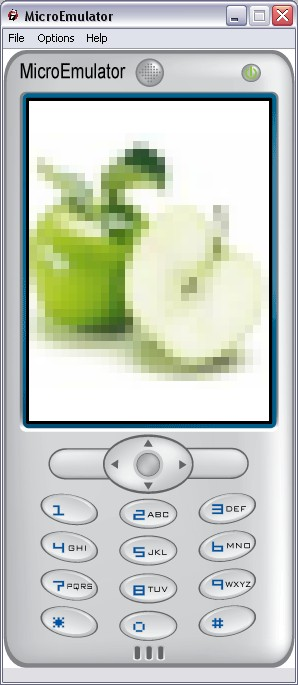

Background prototype

Set an image as background.
This image resized to the screen size.
It is possible to set a color instead of the image if url is empty.
Style fields
- MFString images - Image file url
- MFString style - Style to use for this prototype (Default: Backgnd)
Scalability fields
- SFVec2f screenSize - Size of the screen where the application is displayed
Note:
Use to SizeNotifier prototype to fill all the screen.